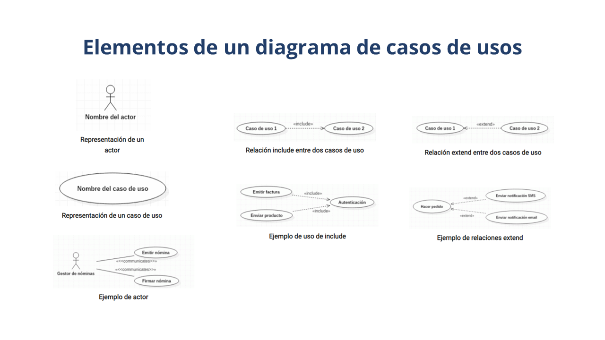

Elementos o Partes de un Diagrama de Casos de Uso:
Actor: Representa a un usuario o un sistema externo que interactúa con el sistema que se está modelando. Los actores pueden ser personas, dispositivos externos, otros sistemas informáticos, etc.
Caso de Uso: Representa una funcionalidad o una acción que el sistema debe realizar para satisfacer algún objetivo del usuario o del sistema. Cada caso de uso describe una secuencia de pasos que se llevan a cabo para lograr un resultado específico.
Relaciones de Inclusión: Indican que un caso de uso (inclusor) incluye la funcionalidad de otro caso de uso (incluido). Esto significa que el inlcuidor puede utilizar los pasos del incluido para llevar a cabo su funcionalidad.
Relaciones de Extensión: Indican que un caso de uso (extensor) puede extender o modificar el comportamiento de otro caso de uso (extendido) en ciertas condiciones. Esto permite modelar comportamientos opcionales o alternativos.
Sistema: Representa el sistema que se está modelando y del que se describen los casos de uso y las interacciones con los actores.
Usos y Beneficios de los Diagramas de Casos de Uso:
Clarificar Requisitos del Sistema
Ayudan a comprender y clarificar los requisitos del sistema desde la perspectiva del usuario final.
Comunicación con los Stakeholders
Facilitan la comunicación entre los desarrolladores y los stakeholders al proporcionar una representación visual de las funcionalidades del sistema.
Identificación de Requisitos Faltantes
Permiten identificar posibles funcionalidades o escenarios de uso que no se hayan considerado inicialmente durante la fase de análisis.
Validación del Diseño del Sistema
Permiten validar el diseño del sistema al verificar si todas las funcionalidades necesarias están representadas y si se han considerado adecuadamente las interacciones con los actores externos.